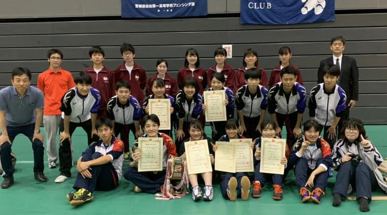

仙台一剣会とは
仙台一剣会は、宮城県仙台第一高等学校フェンシング部とそのOB・OGにより組織されています。
フェンシング部について
練習日程
- 練習場所 仙台一高体育館
- 平日 16時〜19時(水曜日はウェイトトレーニング 木曜日はオフ)
- 土曜・休日 8時30分〜12時30分 13時〜17時(午前または午後に練習を行います。土日のどちらかがオフになる場合もあります。)
部員人数
15人(兼部あり)
練習メニューは自分たちでミーティングを開き決定しています。顧問の先生からのフェンシングの専門的な指導や、トレーナーの方によるトレーニングのほか、諸先輩方からも指導を頂いています。全国大会出場を常に視野に入れ、日々"壱位奮闘"の意を持ち練習に励んでいます。
戦績
すべて開く
2019年度
- 県総体
- 男子個人サーブル 優勝(インターハイ，東北大会出場)
- 女子個人フルーレ 第3位(東北大会出場)
- 女子個人サーブル 準優勝(東北大会出場)
- 女子学校対抗 準優勝(東北大会出場)
東北総体- 男子個人サーブル 予選プール敗退
- 女子個人フルーレ 予選プール敗退
- 女子個人サーブル 第8位
- 女子学校対抗 第3位
インターハイ(鹿児島)- 男子個人サーブル 決勝トーナメント1回戦敗退
宮城県民大会- 女子個人フルーレ シニアの部 第4位
- 女子個人フルーレ ジュニアの部 準優勝
- 女子個人フルーレ ジュニアの部 第4位
県新人大会- 男子個人フルーレ 第5位
- 男子個人フルーレ 第8位
- 女子個人フルーレ 第6位
- 男子学校対抗 第3位
2018年度
- 県総体
- 男子個人サーブル 準優勝(東北大会出場)
- 男子個人サーブル 第4位
- 女子個人フルーレ 第5位(繰り上げにより東北大会出場)
東北総体- 男子個人サーブル 予選プール敗退
- 女子個人フルーレ 予選プール敗退
宮城県民大会- 男子個人フルーレ ジュニアの部 第3位
仙台市民大会- 女子個人フルーレ シニアの部 優勝
- 男子個人フルーレ ジュニアの部 第3位
- 女子個人フルーレ ジュニアの部 第4位
県新人大会- 男子個人フルーレ 第8位
- 女子個人フルーレ 第5位
- 女子個人フルーレ 第8位
JOC宮城県予選会- 女子ジュニアフルーレ 第1位
- 女子ジュニアフルーレ 第2位
- 女子ジュニアサーブル 第1位
- 女子カデエペ 第1位
- 以上3名，本戦出場
2017年度
- 県総体
- 男子個人フルーレ 第8位
- 男子個人サーブル 第4位
宮城県民大会- 男子個人フルーレ シニアの部 第4位
- 女子個人フルーレ ジュニアの部 第4位
仙台市民大会- 男子個人フルーレ ジュニアの部 第8位
- 女子個人フルーレ シニアの部 第5位
- 女子個人フルーレ シニアの部 第6位
- 女子個人フルーレ ジュニアの部 第3位
JOC宮城県予選会- 女子ジュニアサーブル 第2位
- 以上1名，本戦出場
2016年度
- 県総体
- 男子個人エペ 第3位(東北大会出場)
- 女子個人フルーレ 準優勝(インターハイ，東北大会出場)
- 女子個人フルーレ 第3位(東北大会出場)
- 女子個人エペ 優勝(インターハイ，東北大会出場)
- 女子個人エペ 第3位(東北大会出場)
- 女子個人サーブル 準優勝(東北大会出場)
- 女子学校対抗 優勝(インターハイ，東北大会出場)
東北総体- 女子個人フルーレ ベスト16
- 女子個人フルーレ ベスト16
- 女子個人エペ 第4位
- 女子個人サーブル 第4位
- 女子学校対抗 第3位
インターハイ(山口)- 女子個人フルーレ 決勝トーナメント1回戦敗退
- 女子個人エペ 予選プール敗退
- 女子学校対抗 2回戦敗退
仙台市民大会- 女子個人フルーレ ジュニアの部 優勝
- 女子団体 仙台一高A 第4位
県新人大会- 男子個人フルーレ 第6位
- 男子個人フルーレ 第7位
- 男子学校対抗 第3位
- 女子学校対抗 第3位
JOC宮城県予選会- 男子ジュニアエペ 第1位
- 女子カデエペ 第2位
- 以上2名，本戦出場
県選抜大会- 男子個人サーブル 優勝
- 男子個人サーブル 準優勝
- 男子学校対抗フルーレ 第3位
- 男子学校対抗サーブル 準優勝
- 女子学校対抗エペ 優勝(東北予選会出場)
全国選抜大会 北海道・東北予選会- 女子学校対抗エペ 第3位(本戦出場)
全国選抜大会- 女子学校対抗エペ 敗退
2015年度
- 県総体
- 女子個人フルーレ 第3位(東北大会出場)
- 女子個人エペ 第3位(東北大会出場)
- 女子学校対抗 第3位
宮城県民大会- 男子団体 仙台一高A 準優勝
- 女子個人フルーレ ジュニアの部 第4位
- 女子団体 仙台一高A 第3位
仙台市民大会- 男子学校対抗 仙台一高B 第4位
- 女子団体 シニアの部 優勝
- 女子団体 シニアの部 準優勝
- 女子団体 仙台一高A 優勝
県新人大会- 男子個人フルーレ 第5位
- 女子個人フルーレ 準優勝
- 女子個人フルーレ 第7位
- 女子学校対抗 優勝
JOC宮城県予選会- 女子ジュニアフルーレ 第1位
- 女子ジュニアフルーレ 第2位
- 以上2名，本戦出場
県選抜大会- 男子個人サーブル 第3位
- 女子個人フルーレ 準優勝
- 女子個人フルーレ 第4位
- 女子個人エペ 優勝
- 女子個人エペ 第4位
- 女子個人サーブル 準優勝
- 女子個人サーブル 第4位
- 女子学校対抗 優勝(東北予選会出場)
全国選抜大会 北海道・東北予選会- 女子学校対抗 第4位
全国選抜大会- 女子学校対抗 決勝トーナメント1回戦敗退
2014年度
- 県総体
- 男子個人エペ 第3位(東北大会出場)
- 男子個人エペ 第5位
- 男子個人サーブル 準優勝(東北大会出場)
- 男子個人サーブル 第5位
- 女子個人サーブル 第3位(東北大会出場)
東北総体- 男子個人エペ 第3位
- 女子個人サーブル 第5位
宮城県民大会- 男子個人フルーレ ジュニアの部 準優勝
- 女子個人フルーレ ジュニアの部 第3位
仙台市民大会- 男子個人フルーレ ジュニアの部 優勝
- 男子団体 仙台一高A 第4位
- 女子個人フルーレ ジュニアの部 優勝
- 女子個人フルーレ ジュニアの部 第3位
県新人大会- 女子個人フルーレ 第8位
- 女子学校対抗 第3位
JOC宮城県予選会- 男子カデエペ 第2位
- 女子カデフルーレ 第2位
- 女子カデエペ 第1位
- 以上2名，本戦出場
2013年度
- 県総体
- 男子個人フルーレ 第4位(東北大会出場)
- 男子個人フルーレ 第5位
- 男子学校対抗 第3位
- 女子個人フルーレ 第6位
- 女子個人エペ 準優勝(東北大会出場)
- 女子個人エペ 第3位(東北大会出場)
- 女子個人サーブル 優勝(インターハイ，東北大会出場)
- 女子個人サーブル 第4位
- 女子学校対抗 第3位
東北総体- 男子個人フルーレ 1回戦敗退
- 女子個人エペ 第4位
- 女子個人サーブル 第7位
インターハイ(大分)- 女子個人サーブル 1回戦敗退
宮城県民大会- 男子団体 仙台一高B 第3位
- 男子団体 仙台一高A 第4位
仙台市民大会- 男子個人フルーレ シニアの部 第3位
- 男子団体 仙台一高A 第3位
- 男子団体 仙台一高B 第4位
県新人大会- 男子個人フルーレ 第7位
- 男子学校対抗 準優勝
JOC宮城県予選会- 男子カデエペ 第1位
- 男子カデサーブル 第1位
- 男子カデサーブル 第2位
- 女子ジュニアサーブル 第3位
- 以上4名，本戦出場
2012年度
- 県総体
- 男子個人フルーレ 第5位
- 男子個人サーブル 第4位
- 女子個人フルーレ 第3位(東北大会出場)
- 女子個人エペ 第4位
- 女子学校対抗(東北大会出場)
東北総体- 女子個人フルーレ 1回戦敗退
- 女子学校対抗 ベスト8
宮城県民大会- 女子団体 準優勝
仙台市民大会- 男子個人フルーレ シニアの部 準優勝
- 女子個人フルーレ シニアの部 第3位
- 女子団体 仙台一高B 優勝
県新人大会- 男子個人フルーレ 第6位
- 男子個人フルーレ 第7位
- 男子学校対抗 準優勝
- 女子個人フルーレ 第5位
- 女子個人フルーレ 第7位
- 女子個人フルーレ 第8位
- 女子学校対抗 第3位
JOC宮城県予選会- 男子ジュニアエペ 第2位
- 男子ジュニアサーブル 第3位
- 男子カデフルーレ 第1位
- 男子カデサーブル 第3位
- 女子ジュニアフルーレ 第1位
- 女子ジュニアエペ 第2位
- 女子ジュニアサーブル 第3位
- 女子カデエペ 第1位
- 以上8名，本戦出場
2011年度
- 県総体
- 男子個人フルーレ 第4位(東北大会出場)
- 男子個人エペ 第4位
- 男子個人サーブル 優勝(インターハイ，東北大会出場)
東北総体- 男子個人フルーレ 1回戦敗退
- 男子個人サーブル 2回戦敗退
インターハイ(青森)- 男子個人サーブル 決勝トーナメント1回戦敗退
宮城県民大会- 男子個人フルーレ ジュニアの部 準優勝
- 女子個人フルーレ ジュニアの部 第4位
仙台市民大会- 男子個人フルーレ ジュニアの部 準優勝
- 男子個人フルーレ ジュニアの部 第3位
- 女子個人フルーレ ジュニアの部 準優勝
- 女子個人フルーレ ジュニアの部 第3位
- 女子団体 仙台一高A 準優勝
県新人大会- 男子学校対抗 準優勝
- 女子個人フルーレ 第4位
- 女子学校対抗 第3位
JOC宮城県予選会- 男子カデエペ 第3位
- 女子カデエペ 第3位
- 以上2名，本戦出場